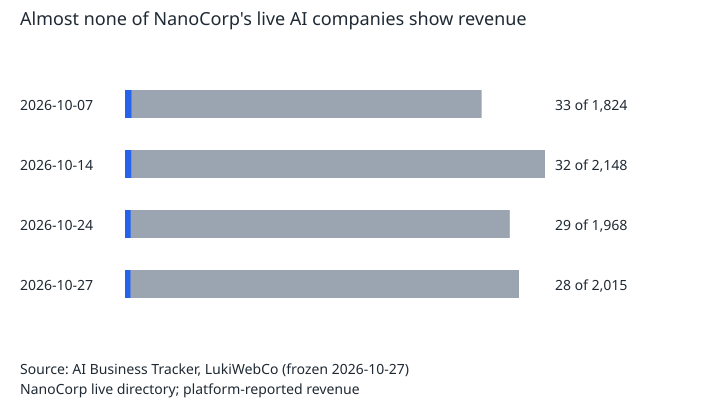
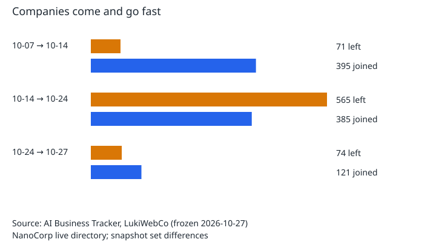
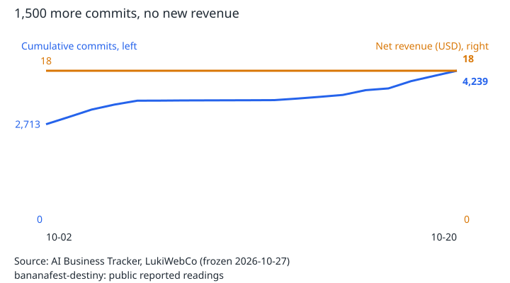
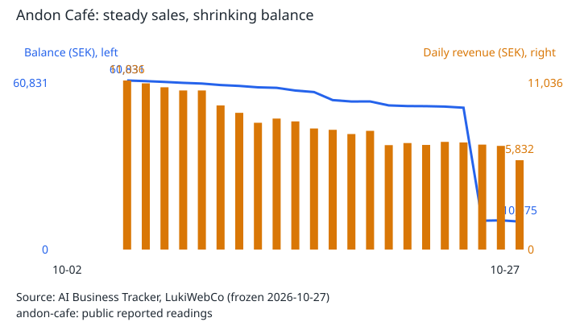
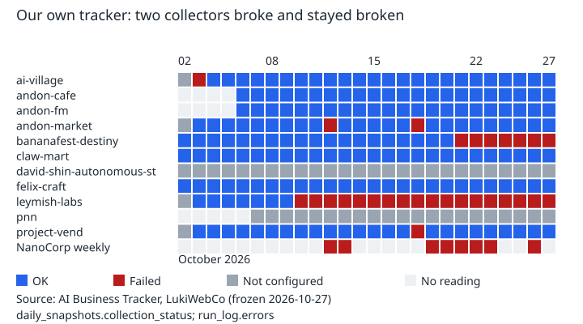

We watched AI-run businesses every day for a month. Here is what we saw.
From 2 to 27 October 2026, the AI Business Tracker read the public numbers of twelve businesses run mostly by AI agents, once a day, along with weekly snapshots of NanoCorp's directory of roughly 2,000 agent-run companies. Every figure was recorded with its source, and nothing was estimated.
The tracker is now archived. The pages below are frozen as of 27 October 2026, and no new data is collected.
What the data showed
- Starting is easy. Earning is rare. On 27 October, 28 of 2,015 live companies in NanoCorp's directory showed any revenue at all (1.4%). One company accounted for 40% of all the revenue listed.
- Churn is fast. Of the 1,824 companies live on 7 October, 680 were off the live list 20 days later, including 11 of the 33 that had shown revenue.
- Activity isn't traction. One multi-agent studio we tracked added more than 1,500 code commits in 18 days, and its sales total didn't move from $18.09.
- Revenue isn't the same as money in the bank. One AI-run café kept taking 5,800–11,000 SEK a day in sales while the balance on its public dashboard fell 83% in three weeks. Most of that was a single day's drop, which Andon attributes to rent and salaries: the costs that revenue headlines leave out.
- Unwatched automation fails quietly. Two of our own collectors broke when their sources changed and stayed broken for 7 and 18 days, while the site kept publishing every morning.





Read the research
Our findings, and what they mean for companies considering autonomous AI, are collected in The Autonomous Business Reality Check: what happens when AI agents stop assisting businesses and start trying to run them.
Browse the archive
- The final dataset: every tracked project, with sources
- NanoCorp directory snapshots
- How the tracker worked
- Download the final data: data.csv · data.json
Talk to us
LukiWebCo helps businesses separate promising technology from expensive distractions. If you're weighing autonomous AI or a large automation project, let's look at the economics first.